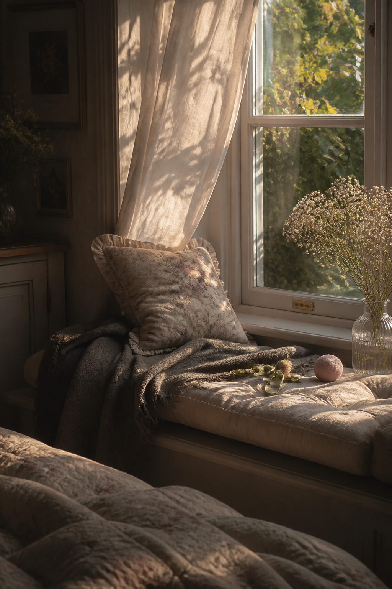
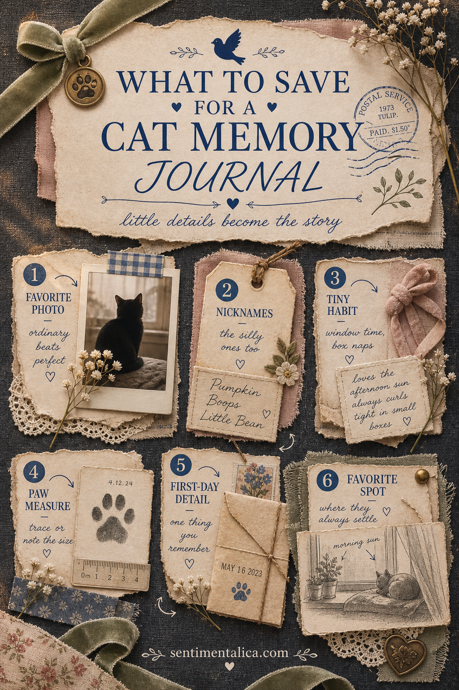
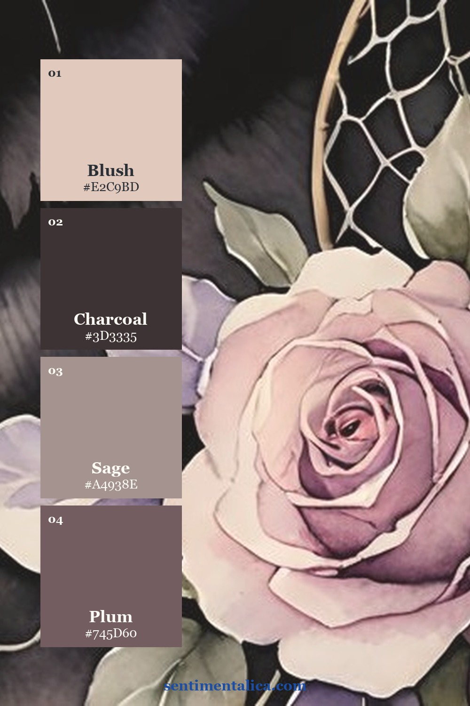
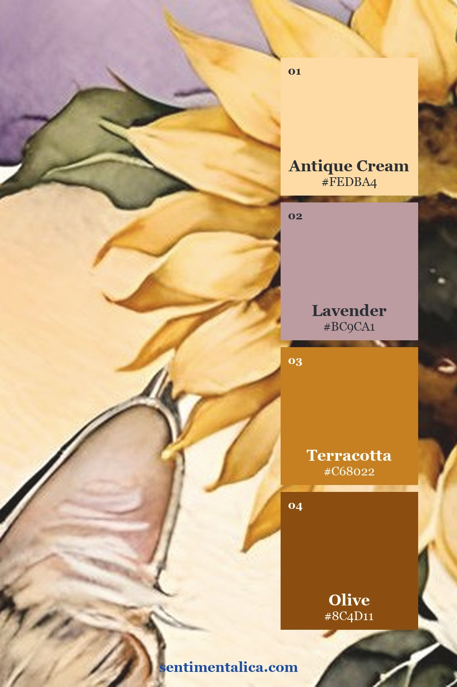
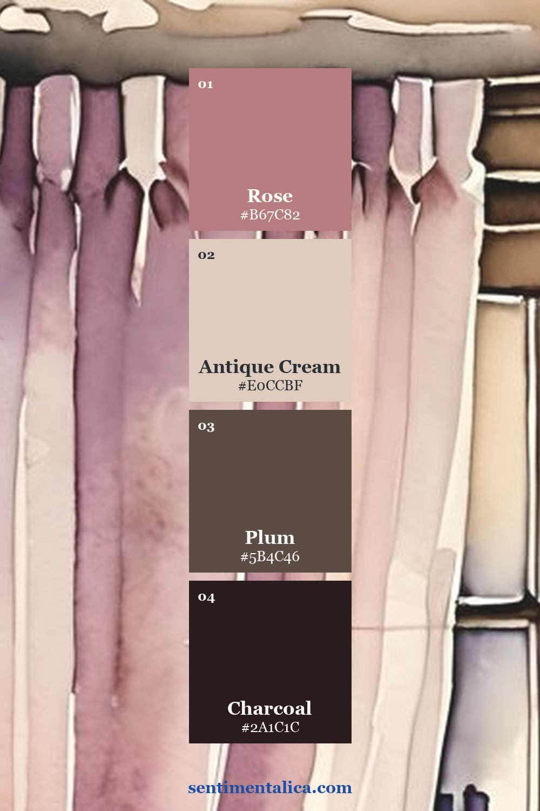
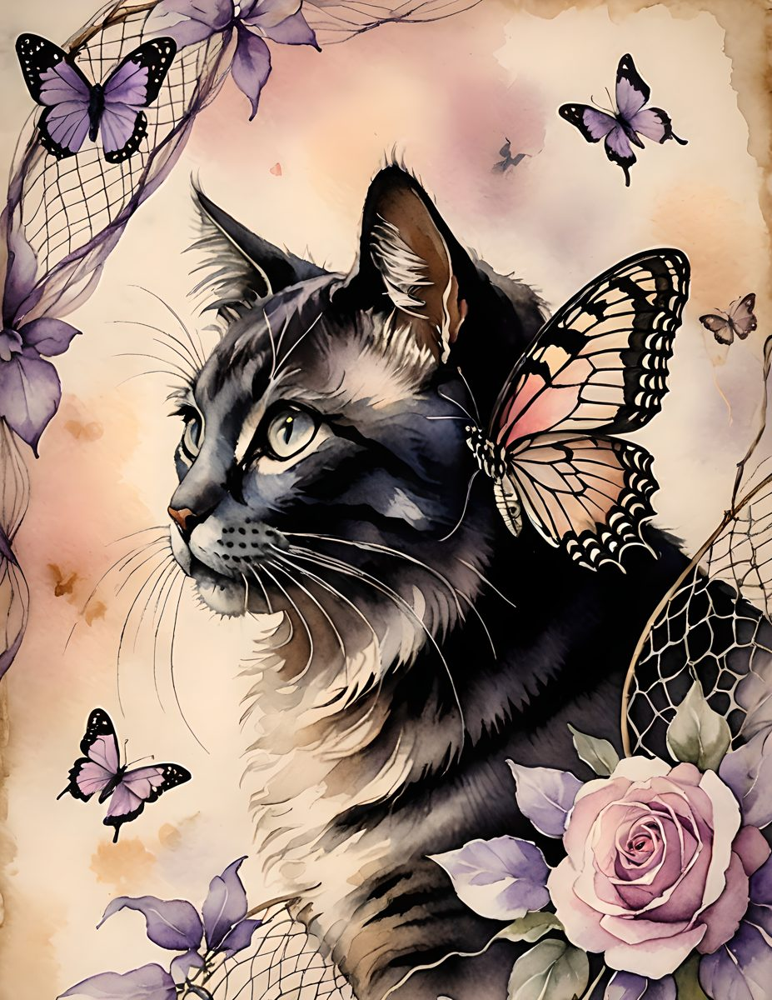
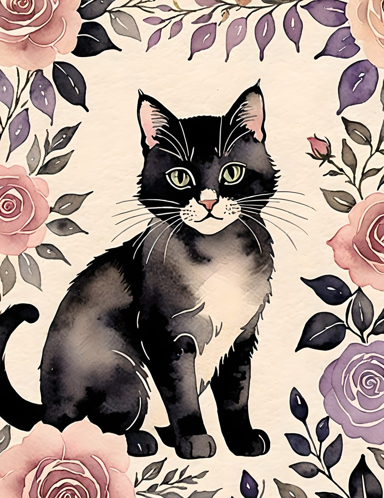

A cat memory journal does not need to begin with a milestone or a perfect portrait. The details you will want later are often much smaller: the strange nickname that became permanent, the box chosen over the expensive bed, the exact patch of afternoon sun, or the sound of paws arriving when a cupboard opens.
Those ordinary repetitions are the story. Record them while they still feel too familiar to forget.

Save evidence of personality, not only photographs
A photograph shows what your cat looked like in one second. A memory page can hold what living together felt like. Keep a note on your phone or a small envelope near the journal and collect six kinds of evidence:
- A favorite ordinary photo, including the blurred and badly lit ones that show a real habit.
- Nicknames, especially the ridiculous versions no one outside your home would understand.
- One tiny habit, such as window time, box naps, a greeting, or a particular demand.
- A physical detail, like paw size, fur color in sunlight, or the shape of a favorite sleeping curl.
- A first-day detail, even if all you remember is the room, weather, carrier, or first meal.
- A favorite place and what happens there at a particular hour.

Give one memory the whole spread
Trying to summarize an entire personality on one page usually creates a crowded biography. Choose one moment instead. Place a photograph or empty photo frame first, add one date, then write three to five lines about what happened before and after the picture.
Add one supporting object: a copied tag, a strip in the color of a collar, a sketch of the window, a tiny map of the room, or a measured paw mark. The object should reveal something the photograph cannot.
Write the sentence only your home could produce
General captions disappear quickly. “Sweet cat” could belong to anyone. A line such as “she waits behind the curtain until the kettle clicks” brings back a voice, place, and rhythm.
When you do not know what to write, finish one of these beginnings:
- I always know you are nearby when…
- The place you choose every afternoon is…
- You have taught this household to…
- The nickname that makes no sense to anyone else is…
- I wish I could bottle the sound of…
Let color connect memories from different days
Your photographs may come from different rooms, seasons, and phones. They do not need to match. Choose two quiet paper colors and one small accent, then repeat them around every photo. Charcoal can anchor pale images; cream gives writing room; sage, blush, lavender, or sunflower gold can carry the emotional note.
These three palettes were drawn from different Whisker Bloom images. Save the one closest to your own photographs, or use the method with colors already present in your cat's favorite blanket, collar, or room.



Create a gentle sequence instead of a timeline
Arrange pages by feeling if dates are incomplete. You might make sections for sunny spots, bedtime rituals, household supervision, favorite boxes, visitors, and quiet company. Repeated details will create their own timeline without asking you to remember everything in order.
Leave a few pockets empty. Add new notes as habits change, and tuck in the small observations that do not yet need a full page.
An optional visual starting point
Your own photographs and words should remain the heart of the journal. If you would like a consistent decorative thread around them, the live Whisker Bloom cat collection offers soft floral, window, rose, lavender, and sunflower imagery. Use one image as a divider or background accent, then return to your real evidence on the next page.



The best memory journal is not the most complete one. It is the one that preserves the tiny, specific truths of sharing a home: where the light fell, which name you used, and what happened every ordinary day.
Find more memory-keeping ideas in the Sentimentalica journal archive.